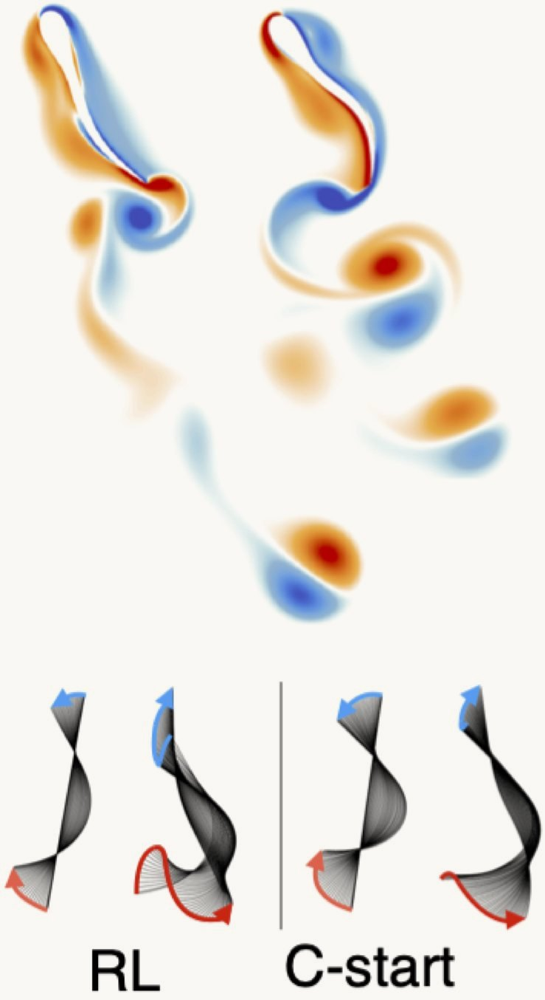
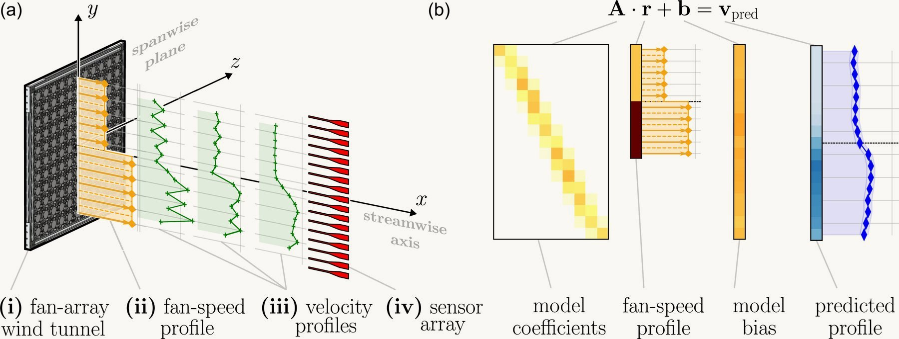

Research / Featured research
Fluid-Body Interaction and Flow Control
Bodies and flows shape each other. We study how a deforming body sheds vorticity in order to move, and how a flow field can be prescribed in the first place: reinforcement learning finds the escape kinematics of larval fish under an energy budget, and a data-driven model turns a wall of fans into wind on demand.
Learning swimming escape patterns for larval fish under energy constraints
How should a larval fish escape a predator when energy is limited? Reinforcement learning coupled to flow simulations rediscovers the classic C-start and also finds more economical escapes: covering the most distance on a fixed energy budget calls for short bursts of acceleration interleaved with gliding.

Data-driven modelling for on-demand flow prescription in fan-array wind tunnels
A wall of individually controlled fans can, in principle, produce any wind field, but turning a target flow into fan commands is a high-dimensional problem. From measurements alone we fit a surrogate model that maps fan speeds to time-averaged velocity profiles, invert it to prescribe flows on demand, and find the physics to be dominantly linear: a superposition of self-similar jets.

Robotic water jetting with an elastically loaded artificial mantle
The Proteus project asks how a robot can propel itself by changing shape. An elastic artificial mantle stores energy as it is filled and releases it in a jet of water, an actuation principle that comes from the body itself rather than from a thruster. We are studying the fundamental questions behind it — how morphology, elastic storage and the surrounding fluid combine into useful thrust — with the goal of robots that sample and monitor lakes and other bodies of water.
More research Ground-Aerial Morphing Robotics · Learning-Based Control · Vision-Based Navigation and Manipulation